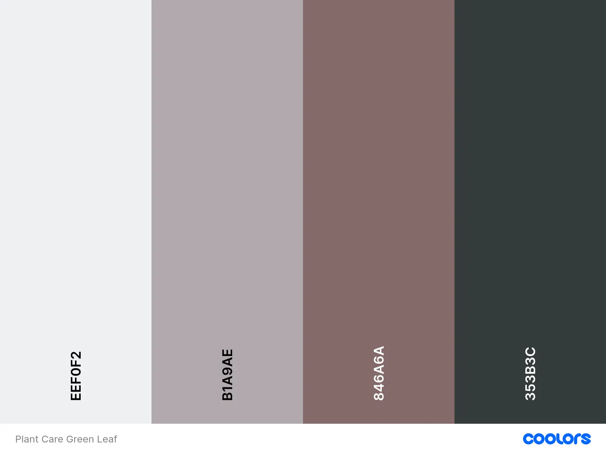

Content
Site Name:
The name for this site is Plant Care Green Leaf. The name will be in the title in the html structure,
it also will
appear in the header with an h1 tag and next to the name will be a logo of a green leaf. The name
was chosen
because a green leaf represents the color of life and well care in plants.
The logo will be this
Site Purpose:
This site will allow the user to understand better the care of plants. In this site the user will find photos of a variety of plants and information for their well care. The purpose of the site will appear with a short paragraph in the header of the site.
Scenarios
Two scenarios are provided for this web site in the home page. The first one answer the question that maybe could ask the user, and it is: Why my plant leaves are turning yellow? To answer that question, I will create a section in the home page that will show the topic in an h2 that will say “Plant Issues and How to Solve Them”. This will have a sub-topic in a div with a h3 tag that will say “Yellow Leaves” and will explain how to solve the problem in a paragraph. Fort the second question that maybe could ask the user could be “How could I supports the healthy development in my plant?”. The answer for this question could be “Compost as a Natural Fertilizer”. This topic will be in a h3 tag inside a section, and there will be a div with the sub-topic in a h2 that will say “The Power of The Compost to Your Plants” and then will be a paragraph with a paragraph that will be showing information regards this sub-topic.
Color Schema:
For this web page the color schema would be apply with some variables through CSS. For the background-color would be #EEF0F2, for text-color would be #353B3C, for the header and footer the color would be #B1A9AE, and for the menu #846A6A.
Typography:
The typography for this project will be “Roboto” and “Sans Serif”. Those would be applied in the body of the web page with a font-weight of 400.Also these would be applied in the h1 tag with a font-weight of 300 and to the h2 with a font weight of 400.